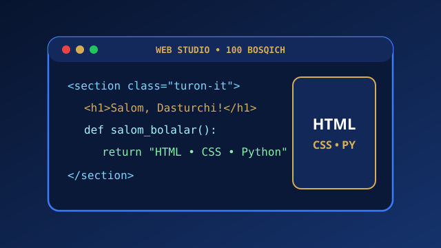
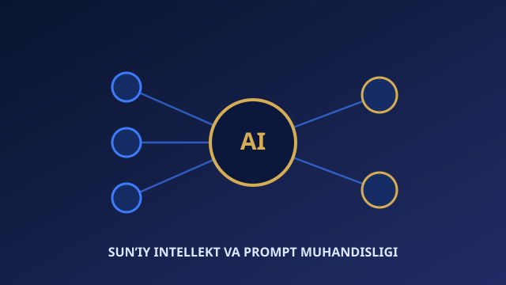

Haftasiga 6 soat • Yillik 270 soat
Matematika va Aniq fanlar
Aniq, aniq iqtisod, aniq texnika yo‘nalishlari va olimpiadalarga chuqurlashtirilgan tayyorlov.

Turon Odob-Ilm — Furqat tumanidagi litsenziyalangan xususiy o‘rta ta’lim muassasasi. Ingliz tili, IT va dasturlashga ixtisoslashgan, o‘zbek va rus ta’lim oqimlarini taklif etamiz.
Maktabimiz 2022-yilda Furqat tumanida ochilgan bo‘lib, bugun O‘zbek va Rus oqimlarida haftasiga 37 soatlik kuchli o‘quv reja, zamonaviy ixtisoslashuvlar va xalqaro imtihonlarga tayyorgarlikni birlashtirgan.
Aniq, aniq iqtisod, aniq texnika yo‘nalishlari va olimpiadalarga chuqurlashtirilgan tayyorlov.

1-sinfdan boshlab kuchaytirilgan ingliz tili, Furqat filialida SAT xalqaro imtihoniga tayyorgarlik.

Barcha sinflarda kompyuter savodxonligi, HTML/CSS/Python, 3D tarmoqlar va kiberxavfsizlik.

Ona tili, badiiy adabiyot, rus tili, fizika, kimyo, biologiya, tarix va tarbiya darslari.
Turon Odob-Ilm maktabida o‘quvchilar zamonaviy kompyuter xonasida kompyuter savodxonligidan tortib 3D tarmoqlar, kiberxavfsizlik, HTML/CSS, Python va sun’iy intellekt asoslarigacha amalda o‘rganishadi.

IT va dasturlash fani o‘qituvchisi • IT WORLD muallifi
Turon Odob-Ilm maktabining yetakchi IT ustozi va o‘quvchilar uchun maxsus yaratilgan IT WORLD (aliyev-turon.netlify.app) interaktiv 3D o‘yin-ta’lim platformasi muallifi. Bolalarga kompyuter savodxonligi, 3D qurilmalar yig‘ish, tarmoqlar, kiberxavfsizlik, HTML/CSS/Python dasturlash va sun’iy intellektni zamonaviy o‘yin metodikasi orqali o‘rgatadi.
“Bola kompyuter va dasturlashni quruq yodlash bilan emas, balki qiziqarli 3D o‘yin, amaliy tajriba va kashfiyot orqali sevib o‘rgansagina haqiqiy natijaga erishadi.”
IT domlamiz Aliyev Og‘abek tomonidan yaratilgan o‘zbekcha interaktiv platforma: 10 ta o‘quv o‘yini, Turon 3D ochiq dunyo maktabi, 3D kompyuter yig‘ish, Tarmoq Akademiyasi va 20 kompyuterli sinf musobaqalari!
Haqiqiy Turon Odob-Ilm maktabi binosi, hovlisi, avtobusi va 2 qavatli 8 ta IT laboratoriya bo‘ylab 360° sayohat, ustozlar va interaktiv topshiriqlar.
O‘yinni ochish ↗
O‘quvchilar protsessor (CPU), RAM, SSD, quvvat bloki va kabellarni 3D korpusga qo‘lda joylab, kompyuterni yoqish va nosozliklarni topishni amalda o‘rganishadi.
O‘yinni ochish ↗
Kompyuter xonasida 360° harakatlanib, kabel tortish, tarmoq qurilmalarini ulash (10 bosqich) hamda buzilgan tarmoqlarni tuzatish (10 bosqich).
O‘yinni ochish ↗
Blokli dasturlashdan tortib soyali kod ustidan HTML/CSS yozib shaxsiy sayt yaratish va Python topshiriqlarini yechish metodikasi.
O‘yinni ochish ↗
Kuchli parol yaratish, firibgar (phishing) havolalarni ajratish, Firewall, SQLi va XSS himoyasini o‘yin shaklida o‘zlashtirish.
O‘yinni ochish ↗
Sun’iy intellekt qanday ishlashini amalda sinab ko‘rish, ma’lumotlarni tasniflash va AI’ga to‘g‘ri savol (prompt) berish mashqlari.
O‘yinni ochish ↗O‘quvchilarimiz qaysi sohani tanlashmasin — biznes, huquq-tartibot, ilm-fan yoki zamonaviy tibbiyot — IT va Sun’iy intellekt ko‘nikmalari bilan o‘z orzusidagi kasbga yanada oson va ishonchli erishadilar.
“Assalomu alaykum! Mana IT’dan yaxshi o‘qiganim uchun biznesmen bo‘ldim. Ota-onamga rahmat!”
Zamonaviy tadbirkorlik, raqamli tahlil va IT loyihalarni boshqarish orqali kelajakda o‘z biznesini yaratish osonlashadi.
“Assalomu alaykum! Mana IT’dan yaxshi o‘qiganim uchun ichki ishlarda ishlayapman.”
Axborot xavfsizligi, raqamli tizimlar va kiberhimoya bilimlari huquq-tartibot hamda davlat xizmatida katta ustunlik beradi.
“Assalomu alaykum! Mana IT’dan yaxshi o‘qiganim uchun olim bo‘ldim.”
Fizika, kimyo, biologiya va matematika fanlarini IT hamda Sun’iy intellekt bilan birlashtirib ilmiy kashfiyotlar qilish oson.
“Assalomu alaykum! Mana IT’dan yaxshi o‘qiganim uchun stomatolog bo‘ldim. Ota-onamga rahmat!”
Bugungi tibbiyot 3D diagnostika, raqamli tasvir va AI tahlilisiz ishlamaydi — IT bilgan shifokor zamon bilan hamnafas bo‘ladi.
Har bir yosh bosqichiga moslashtirilgan akademik va amaliy o‘quv reja.
Fanlar: O‘qish, yozish, matematika, ingliz tili, kompyuter savodxonligi, odobnoma
Bolaning shaxsiyatini shakllantirish, o‘qish-yozish va asosiy ko‘nikmalarni mehr hamda tartib bilan o‘rgatish.
Fanlar: Matematika, fizika, ona tili, rus tili, ingliz tili, IT va dasturlash
Kuchli akademik baza, kuchaytirilgan ingliz tili va IT yo‘nalishi bo‘yicha chuqurlashgan o‘quv dasturi.
Fanlar: Majburiy fanlar, chuqurlashtirilgan yo‘nalish fanlari, IT loyihalar, ingliz tili
Oliy ta’limga maqsadli tayyorlov, 60 ta variantli mukammal test mashg‘ulotlari va kasb tanlash yo‘l-yo‘riqlari.
Tajribali rahbariyat va zamonaviy metodikaga ega fidoyi pedagoglar.

“Bizning maqsadimiz — zamonaviy bilim, kuchli tarbiya va keng dunyoqarashga ega avlodni voyaga yetkazish.”
“Bola kompyuter va dasturlashni quruq yodlash bilan emas, balki qiziqarli 3D o‘yin, amaliy tajriba va kashfiyot orqali sevib o‘rgansagi…”
Maktabimizning rasmiy sahifalaridan olingan haqiqiy binolar, IT xonasi va sinfxonalar suratlari.
Maktabning asosiy kirish qismi va hovlisi
Kompyuter savodxonligi va dasturlash amaliyoti
Zamonaviy kompyuter xonasida amaliy dars va daftar bilan ishlash
O‘quvchilar Sun’iy intellekt va operatsion tizimlar bo‘yicha topshiriq bajarmoqda
Qulay partalar va zamonaviy sinfxona jihozlari
Kichik sinflarda ustoz bilan faol mashg‘ulot
Jamoaviy va individual ta’lim muhiti
Rasmiy YouTube kanalimizdagi videolarni to‘g‘ridan-to‘g‘ri shu sahifada tomosha qilishingiz mumkin.

Maktab muhiti, o‘quvchilar va dars jarayonlari haqida rasmiy video.
YouTube’da ochish ↗
Yangi o‘quv yili qabul jarayoni va imkoniyatlar haqida videorolik.
YouTube’da ochish ↗
Turon Odob-Ilm o‘quvchilari maktab hayoti va ustozlar haqida.
YouTube’da ochish ↗
O‘quvchilarni tashish uchun maktab avtobusi yo‘nalishlari haqida lavha.
YouTube’da ochish ↗Rasmiy Telegram kanalimizda e’lon qilingan so‘nggi yutuqlar va tadbirlar.
Turon Odob-Ilm xususiy maktabining 10 nafar o‘quvchisi Furqat tumani fan olimpiadasida g‘oliblikni qo‘lga kiritdi.
Telegram manbasi ↗
Toshkent shahrida bo‘lib o‘tgan IRN Xalqaro Olimpiadasida maktabimiz o‘quvchilari muvaffaqiyatli qatnashdi.
Telegram manbasi ↗
Filiallarimizning rus tili hamda adabiyot fani o‘qituvchilari ishtirokida zamonaviy metodik seminar o‘tkazildi.
Telegram manbasi ↗Maktabimizdagi tajribangiz haqida xolis fikringizni qoldirishingiz mumkin. Fikringiz ijobiy yoki tanqidiy bo‘lishidan qat’i nazar, biz uchun muhim.
“[DEMO] Bu shablon uchun namunaviy fikr yozuvi. Haqiqiy ota-onalar fikrlari saytdagi forma orqali yuborilib, moderatsiyadan keyin chiqariladi.”